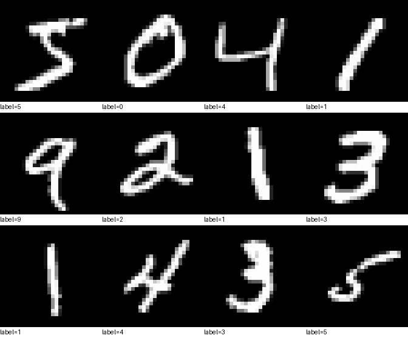
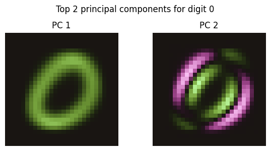
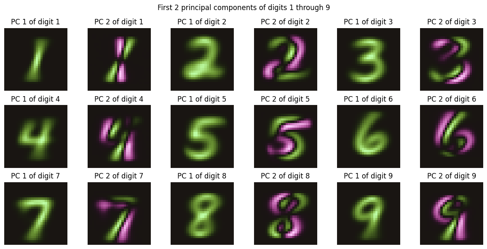
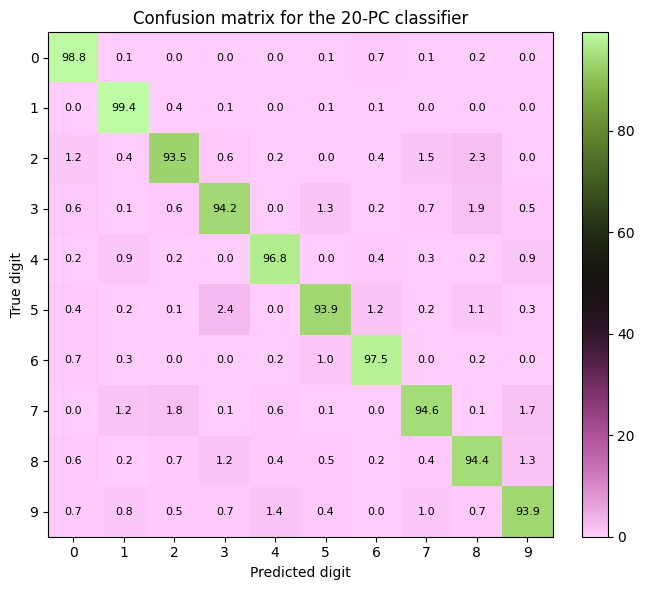
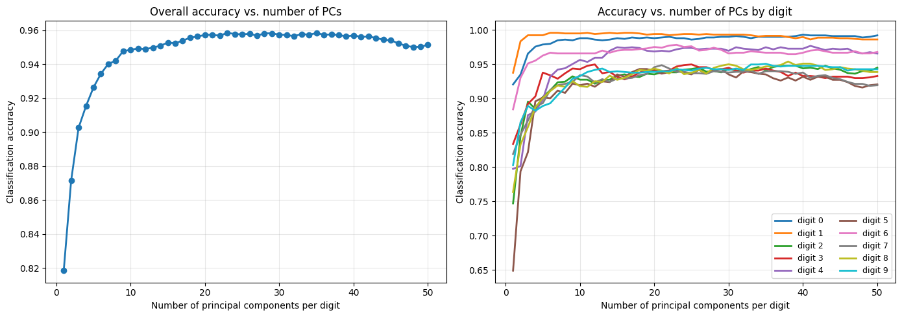
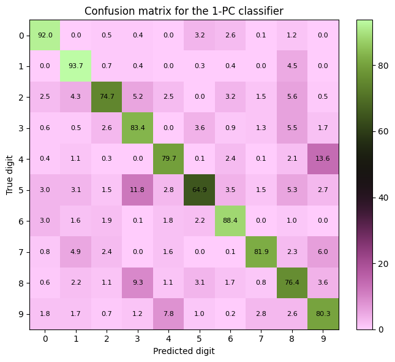

{kind=link}
Digit Classifier (simple computer vision)
In progressWho is the intended audience? While SVD is a more advanced linear algebra topic, I write this for a general audience and will try to keep the math light and intuitive. Feel free to email me (or come to office hours if you're a student) if you want to talk through the math or code in more detail.
The MNIST data set consists of 70,000 images of handwritten digits. Each image is a 28x28 grid of pixels (black and white intensities). Here are some sample images from the training set:

SVD Baseline: Singular Value Decomposition (SVD) is not Machine Learning or Neural Networks, but can classify the digits reasonably well. Let's establish this baseline and maybe this project will evolve to non-linear ML methods. (In the stats/comp sci world, SVD is also called PCA - Principal Component Analysis.) To do this we need to "vectorize" and sort the training images by digit. For example, there are 5,923 training images of the digit "0", and we convert each \(28\times 28=784\) pixel image to a 784-length vector to make a 5923x784 matrix where each row is a vectorized "0" image. We shall call this matrix \(A_0\) since it is the data for the digit "0". We can do the same for each digit, giving us 10 matrices \(A_0, A_1, \ldots, A_9\).
The two facts we want to exploit are:
- Images have a lot of unnecessary pixels
- The images of the same digit are similar
For example, the first 6 images of "0" in \(A_0\) are:

We can see lots of similarity across the "0" images. Many pixels are always black and the relevant information is centred in the middle of the image, just to name a few observations. Exploiting these facts is the key to SVD's ability to classify the digits.
The math can get a little deep here but the take away is that SVD is a way to find the "most important" features of a matrix. The first "singular vector" (or "principal component") of the matrix \(A_0\) is the single vector that "best represents" all the "0" images. Each additional vector captures the next most important feature of the data, and so on. Let's see this with an example.
Here are the first 2 Principal Components of the "0" matrix \(A_0\):

The first PC captures the overall shape of the "0" digit.
It's smoother than the first 6 images in the training set because it's sort of an average. It's a very clear on/off white/black pattern that captures the overall shape of the "0" digit.
PC2 (and beyond) we introduce color because there are positive and negative values in the \(28\times 28\) grid. This is because while the first PC will be the general shape, PCs beyond the first one will be features you can add or subtract to change the image. Look back at the first 6 images of "0" in \(A_0\). Do you notice how many of them seem to slant along the southwest to northeast diagonal?
The second PC can exaggerate/suppress the typical SW to NE slanting . This is what I mean when I say "Each additional vector captures the next most important feature of the data." Apparently, that slanting of the digit is the most important feature, once the general shape is pinned down (i.e. after knowing PC1).
We can demonstrate this by taking a weighted average of the first two PCs: \[\text{NewImage} = (1-\alpha) \cdot \text{PC1} + \alpha \cdot \text{PC2}, \quad -1 \le \alpha\le 1\] where \(\alpha\) controls how much of the second PC's slanting feature we add (or subtract) to the first PC. Below is an example for various \(\alpha\) values, notice how positive \(\alpha\) increase slanting and negative \(\alpha\) decrease it.

To get a sense of how adding PC2 does this, scan your eyes from the NW corner of PC2 to the SE corner and notice the extreme positive/negative (green/purple) variation along that diagonal. The purple pixels in that variation subtract (or turn off) pixels. So, when we add PC2 to PC1, we are turning down/off pixels in the purple regions and brightening pixels where PC2 is green.
What I hope to make clear with these examples is that simply taking
a linear combination of the first two PCs can give us a wide variety of
"0" images.
Mathematically, we have compressed the 784 pixel information for each 0 digit image to just two dimensions.
Namely, how much PC1 and PC2 to add.
Here are the first 2 PCs for each digit (other than zero):

If you want to test your understanding, try to imagine how the green/purple space of each PC pair morph the digit. For example, the PCs of digit 2 seem to imply the most significant variation in 2 shape is whether one writes the bottom left corner of their 2 with a loop or a cusp. We can see this in PC2: The purple appears to suppress the "loop-style" and the green enhances the "cusp-style" of writing that digit. (You may notice that for many of the other digits, the main variation is simply how upright/slanted one writes thier numbers.)How to build a Classifier: Each \(28\times 28 = 784\) image is thought of as a vector in \(\mathbb{R}^{784}\). Importantly, \(\mathbb{R}^{n}\) has an inner product structure and we can therefore project onto subspaces. (For the general audience, an "inner product" is a way to quickly measure components, the parts of a whole.) For each digit matrix \(A_d\), we have a list of Principal Components (a.k.a singular vectors), you've seen the first 2 PCs for each digit up above. The steps are
- Pick a number \(1\le m\le 784\) and use \(m\)-many of the PCs for each \(A_d\) to make a \(d\)-digit subspace.
- Let \(P_{d,m}\) be the projection map to that space.
- Given a test image, \(x\) we compute each of error between the true image and its projection onto \(P_{d,m}\): \[ ||x-P_{0,m}x||^2,\ ||x-P_{1,m}x||^2,\ \cdots, ||x-P_{9,m}x||^2. \] We and classify \(x\) to be digit \(d\) where \[ d = \arg\min_k ||x-P_{k,m}x||^2 \]

From the Confusion Matrix we can see that every test digit is classified accurately atleast 93% of the time and some digits, like 9 and 2, are harder to correctly classify. There was nothing special about 20PCs and we can iterate this process to see how using different numbers of Principal Components influences the overally accuracy, both by digit and as an average.

We can see from the Accuracy Plots a few interesting insights.- First, our overall accuracy is above 90% with as little as 3 principal components. This is a huge data compression. With 90% accuracy we can compress a 784 length array into 3 numbers, the weights on each of the first 3 principal components. (Albiet, the compression is more like 784 \(\to\) 30 since we need 3 weights for each digit).
- If we look at the accuracy vs. digit plot, we see the digits we most accurately classify are 0 and 1, followed by 4 and 6. Moreover, digit 5 has the worst accuracy for low dimensional projections.

Here we can see the poor performance of the digit 5. It's correctly labelled only 65% of the time and is most often confused for 3. While this makes sense, I was expection a decent amount of 5's to be mislabeled as 6, but that only happens 3.5% of the time. Another feature I find interesting is the level of asymmetry in the confusion matrix. For example, we are almost twice as likely to classify an 8 as a 3 (9.3%) vs classify a 3 as an 8 (5.5%). What stands out to you about this project?